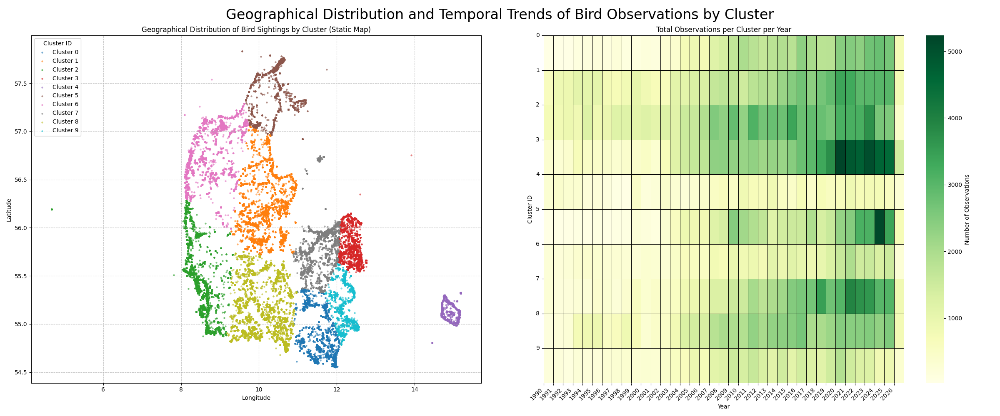

The Human Flock: Mapping the Social Swarm
When a biological rarity becomes a social phenomenon.
In the quiet corners of the Danish landscape, a single notification can trigger a migration. It isn't the birds who are moving—it’s the humans.
When a rare species is sighted, a "Social Gold Rush" begins. Within minutes, a digital signal
ripples through the birding community; within hours, dozens of observers have "swarmed" a single
coordinate. This project, The Human Flock, uses thirty years of birdwatching data not
to study the flight patterns of wings, but the social patterns of people.
Beyond the Bird: The Human Sensor
Using millions of observations from DOFbasen (1990–2026), we treat every
birdwatcher as a high-precision social sensor. By focusing on species categorized as
Vulnerable (VU), Endangered (EN), or Critically Endangered (CR), we isolate the moments
of highest social "value." These rare sightings act as catalysts that reveal the hidden
architecture of the Danish birding community:
The Key Columns
On the right you see our key columns, which represent the four "atoms" of our dataset.
Observation Date: Acts as a temporal sensor, capturing the exact moment a human decided to engage with their surroundings and report a sighting.
Location Coordinates: Functions as a spatial sensor, revealing the geographical "hotspots" where social infrastructure and human presence overlap with the wild.
Common Name: Serves as the incentive or "trigger" that motivates the human sensor to act, showing which species drive the most community activity.
Observer ID: Provides the social identity, identifying the individual or institution—like the bird stations.
SOCIAL SENSORS:
---The Social Sensing flow
The plot to the left provides a multi-dimensional view of how human observation transforms into a structured data stream. By encoding the Observation Date directly into the "freshness" of the flows, we can draw several key conclusions about our social sensing network. It is an overview of top 10 Observers, species and locations to emphasize their relationship
Institutional vs. Individual Consistency: The thickest, most stable flows originate from institutional sensors like Blåvand Fuglestation and Skagen Fuglestation. Their light green and teal hues suggest a long-standing, consistent contribution to the data baseline over many years.
The Rise of Modern Hotspots: Bright yellow and lime-green lines represent more recent "social pulses." Notice how species like the Ride and Fløjlsand act as modern triggers, drawing data from a wide variety of observers toward specific geographical coordinates.
Temporal Shifts in Activity: The presence of thinner, purple links (historical baseline) interspersed with vibrant yellow links (modern activity) illustrates the digitization of nature.
Convergence: The rightmost column shows how disparate human observers (the "Who") and different bird species (the "What") ultimately converge on a few specific Spatial Sensors (the "Where"). These locations represent the physical infrastructure — parking lots, hides, and coastlines—that facilitate the community’s ability to act as sensors.
This visualization confirms that our dataset is not merely a list of birds, but a living history of human attention. The variation in color and thickness proves that social sensing is a dynamic process where modern technology has intensified the frequency and "freshness" of the data we receive from the field.

Total observation per year (1990-Present)
The plot above shows the growth of observations for all municipalitiesfrom 1990 to 2026:
1990–2003: Data volume remained consistent and low, averaging approximately 5,000 observations per year. Birdwatching was largely an analog activity. Observations were often recorded in physical notebooks and shared through local club newsletters or landline phone "rare bird" alerts .
he internet was in its infancy. DOFbasen (the Danish Ornithological Society's database) was established as an online platform toward the end of this era, shifting the mission from local club sharing to a science-based NGO profile.
2004–2014: A steady upward trend began, with volume doubling to roughly 15,000–20,000 annual reports. This decade saw the rise of the "prosumer" (professional consumer). Digital cameras became affordable, allowing birdwatchers to provide photographic evidence, which increased the "social value" of sightings (Lundquist et al., 2025).
The mid-2000s marked the birth of the Web 2.0 era—interactive platforms where users didn't just read data but contributed to it (Turakulov, O. et al, 2024). The launch of the first smartphones (iPhone in 2007) began to change the "spatial sensor" aspect, as GPS technology started appearing in consumer hands (Atsumi, K. et al., 2024).
2015–2024: Significant growth occurred, reaching a peak of nearly 27,000 observations in the early 2020s. Birdwatching became democratized. Gamification elements and species identification apps made the hobby accessible to a "dispersed army of enthusiasts" beyond just experts (Lundquist et al., 2025). The COVID Effect: While your data doesn't explicitly label it, the peak in the early 2020s aligns with a global trend where urban residents turned to nature during pandemic lockdowns, using smartphones to document local biodiversity (Basile, M. et al., 2021).
2026: The current decline is a result of incomplete data for the ongoing year.
This trend establishes a baseline for comparing modern data density against historical levels..

Geographical Distribution
The data reveals that human "flocking" is driven by reputation and infrastructure rather than just bird or human population density.
Infrastructure Wins: Frederikshavn (approx. 30k) and Guldborgsund (approx. 24k) lead the nation. These regions outperform major cities like Aarhus (approx. 16k), proving that specialized birding stations and coastal infrastructure generate more data than urban population density.
The Magnet Effect: The sharp drop-off after the top five municipalities shows that social sensing is highly concentrated. Observers gravitate toward "elite" landmarks with established reputations, leaving most other regions as quiet baselines.
Convenience Hubs: Mid-tier municipalities like Aalborg and Varde represent an "accessibility baseline"—steady data driven by local residents using nearby paths for everyday birding.
The Verdict: Bird data is a product of accessibility. Human sensors don't just go where the birds are; they flock to the towers, paths, and parking lots that make sensing easy.

Total Observations per Area per Year
By clustering millions of data points into 10 geographic "pulse zones," we can objectively separate the Human Base Rate (where people live) from Anomalous Spikes (where the birds are).
The Urban Anchor (Clusters 0 & 3): The Capital Region remains the most stable "social sensor." Its consistent deep green saturation post-2010 reflects high observer density and reliable infrastructure.
The Skagen Explosion (Cluster 4): The heatmap reveals a massive intensification in North Jutland after 2020. This region has evolved from a seasonal birding spot into a year-round social epicenter.
The Digital Shift: Across all clusters, the transition from pale yellow to vibrant green (2008–2015) marks the "Digital Awakening"—the moment mobile reporting transformed birdwatching from a notebook hobby into a real-time data stream.
Spotting the Rare: Clusters 5 and 6 (Western Jutland) maintain a low base rate. Any sudden darkening in these zones isn't just noise—it's a high-value "swarm" where a rarity has successfully pulled the community away from the cities.

A part time hobby
Before we dive further into the birdwatching hobby it is interesting to understand the nature of the birdwatchers. While different birds are active at different times of day it is clear that the birdwatchers are most active around noon and especially in the weekend with sunday being the major hotspot.
We do however see a general hotspot around noon independent of day of the week which could indicate that a lot of birdwatchers are people outside the workforce. This is also supported by looking through the names of the birdwatchers which have a tendency to be older male names. This is however only a theory as we can't see occupation and age in the dataset.
<

The population density anomaly
While we could expect a correlation between the amount of people in the municipality and the amount of sightings it is not what is actually happening. As we saw in our opening exploration there is some municipalities that stand out from the rest. Especially Frederikshavn and Odsherred. These are rural areas with a lot of nature and coastal areas that also appeal to hikers and nature lovers which could explain the overrepresentation in observations.
Something to be noted is that due to the size of our dataset we filtered out all of the common bird sightings and the distribution could therefore also be explained by a larger occurance of rare birds rather than a larger population of birdwatchers.

Birdwatching powerhouse or one time fad
When tryin to understand the patterns of birdwatchers it was relevant to understand their behavior. So when comparing the highest and lowest 25% to the middle 50% it becomes clear that while we see a lot of birdwatchers there is a dedicated core contributing a majority of the sightings while the bottom 25% is more likely people who are interested in exploring birdwatching or maybe someone who spotted an interesting bird and wanted to report it.
Birdlife Denmark (DOF) have developed an app that simplifies the classification of bird sightings which might contribute to the general rise in sightings together with the pandemic in 2020. This however is probably sommething that could turn into a fad or a onetime thing as the original app hype might turn into a chore or simply be forgotten.

Do you want to be a part of the trend?
To be an accepted birdwatcher and part of the community, you have to contribute to the fellowship. It is a social community where sharing your knowledge is what makes you an accepted member. By doing that, you can collectively notify each other when there is a social gathering and commute together.
- Grey Plover
- Velvet Scoter
- Common Pochard
- Black-legged Kittiwake
- Red-footed Falcon
- Long-tailed Duck
- European Turtle Dove
- Horned Grebe
- Curlew Sandpiper
- Northern Bald Ibis
- Reeve's Pheasant
- Red-breasted Goose
- Broad-billed Sandpiper
- Atlantic Puffin
- Snowy Owl
- White-headed Duck
- Lesser Yellowlegs
- Steppe Eagle
- Swan Goose
- Buff-breasted Sandpiper
- Eastern Imperial Eagle
- Aquatic Warbler
- Lesser White-fronted Goose
- Military Macaw
- White-rumped Sandpiper
- Rustic Bunting
- Red-crowned Crane
- Steller's Eider
- Audouin's Gull
- Sharp-tailed Sandpiper
- Saker Falcon
- Sociable Lapwing
- Egyptian Vulture
- Steller's Sea Eagle
- Yellow-breasted Bunting
- Rüppell's Vulture

Optimize your time
Every species has its own "social window" - a specific time of year when the human sensor network vibrates with activity. If you want to arrive and identify a specific species, you need to know which months to dedicate your time to. To be a part of the "Social Gold Rush," you can use this bar chart to identify different species and allocate your time perfectly throughout the year. By timing it right, you increase your chances of being part of the "trending" species of the month.
The chart shows the probability per month for each species across the year. This helps you see when a specific bird is most likely to trigger a social response. For example, if you want to know when to observe the Red-footed Falcon (Aftenfalk), select it in the chart. Notice the social peak in May. This acts as a baseline for the community's readiness. Knowing which months have the most activity gives you the opportunity to schedule your time and be ready for the next time there is a trending species or a hotspot for the Falcon.
The Anatomy of a Swarm: Mapping the Social Heat
The previous chart told us when the sensors are active. This interactive map shows exactly where the swarm assembles. Once you know when to look, the next question is where to join the flock. This is where the digital signal meets the physical landscape.
The social heatmap is your guide to the community's presence. It visualizes the convergence of humans and birds, filtered by your chosen species and month. By using the slider to move through the months, you are watching the movement of human attention across the Danish landscape.
If you look for the Red-footed Falcon in May, notice how certain coordinates glow brighter than others. These aren't just random spots; they are the "Social Hotspots" where the community gathers to watch the falcon. Choose your species, find the community's dedicated month, and find your coordinates to join the army documenting the Danish wild.
Conclusion?